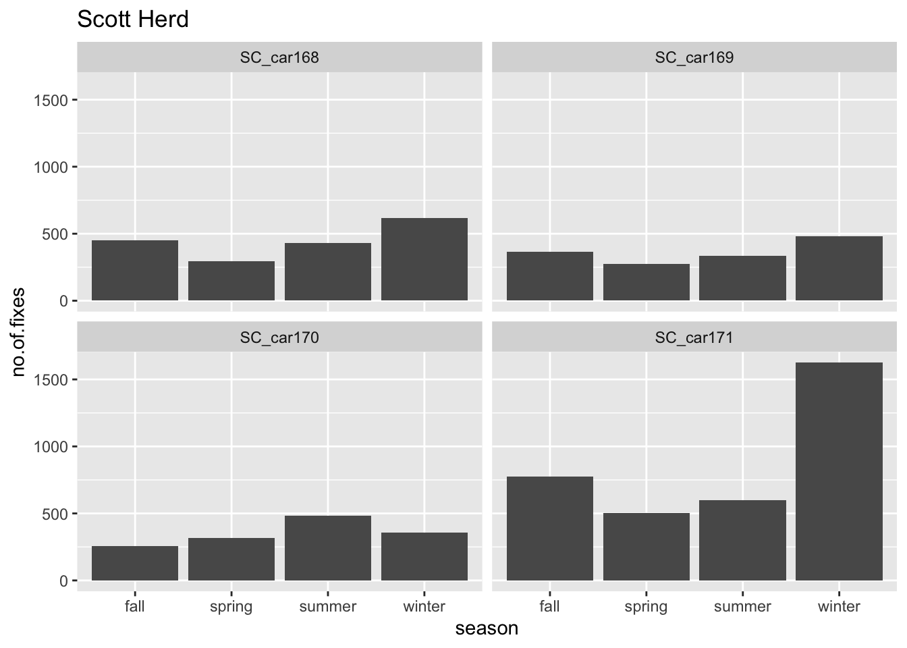
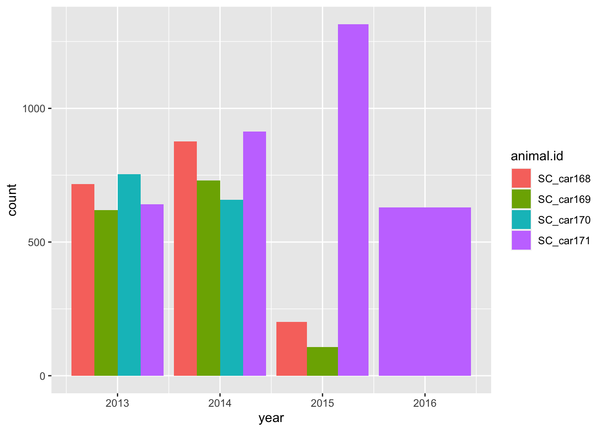
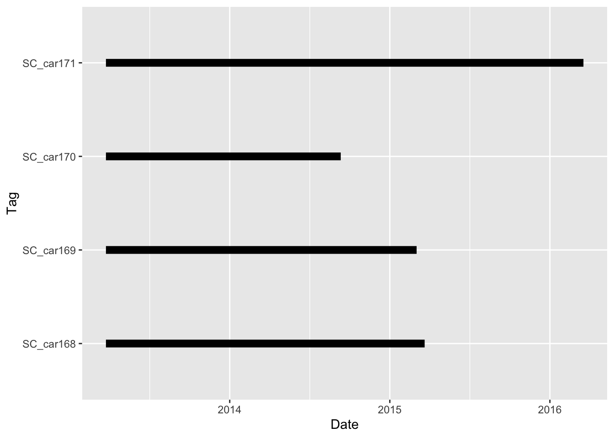
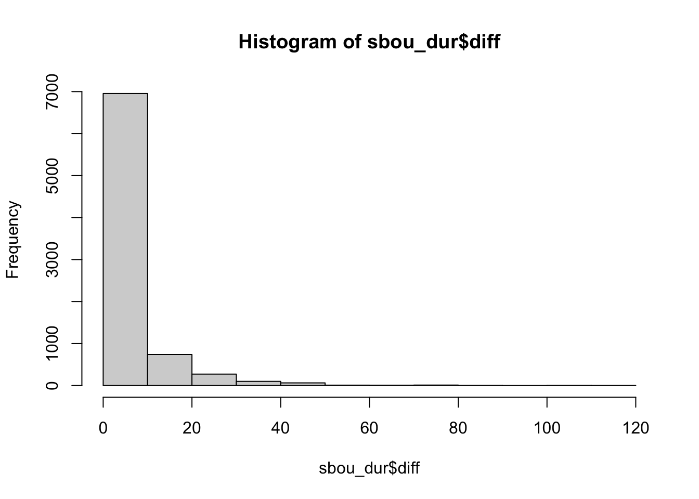
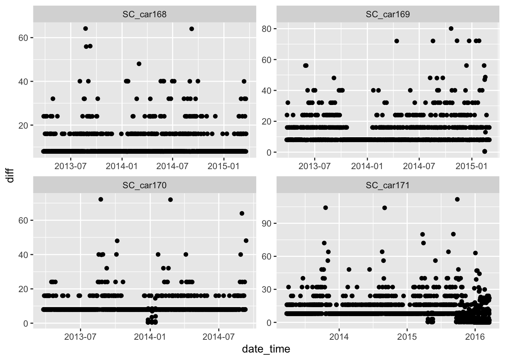
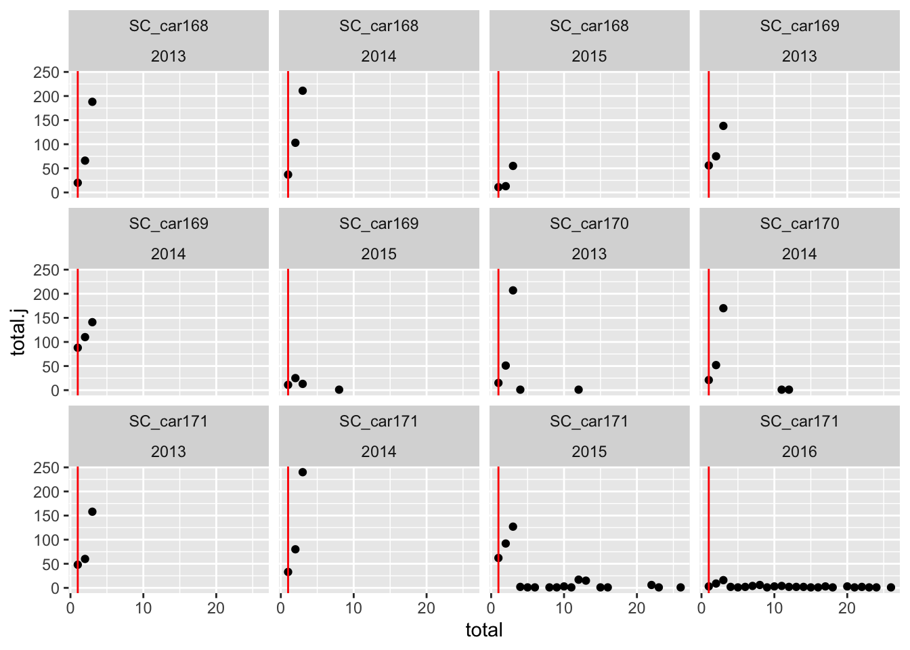

# load libraries
library(readr)
library(sf)
library(readxl)
library(dplyr)
library(lubridate)
library(ggplot2)
# Read in data files.
ref_raw <- read_csv("raw_data/Mountain caribou in British Columbia-reference-data.csv",
name_repair = "universal") # use this to standardise the column names
loc_raw <- read_xlsx("raw_data/Mountain caribou.xlsx")Introduction to Telemetry Data
How to QA and summarize telemetry data
Overview:
In this module we will read in, clean, QA and summarize raw telemetry data. This includes:
read in data as csv/xlsx and convert to spatial data
QA data for missing values and poor coordinate precision
generate tabular summaries
standardize fix rate of telemetry points for future analysis
Caribou data set:
In this workshop we will use GPS telemetry data from Mountain Caribou (Rangifer terendus) herds in the Peace region of British Columbia. The full data set and metadata can be found on movebank, also see bonus content - How to download data from movebank. The data set used in this course has been modified for demonstration purposes and should not be used in analysis.
1. Reading data into R.
In this course we will be providing two files (Mountain caribou in British Columbia-reference-data.csv and Mountain caribou.xlsx). The first task is to look at the data to make sense of what we have.
Lets take a look….
# Reference data
head(ref_raw)# A tibble: 6 × 26
tag.id animal.id animal.taxon deploy.on.date deploy.off.date
<chr> <chr> <chr> <time> <time>
1 151.51 HR_151.510 Rangifer tarandus NA NA
2 C04a GR_C04 Rangifer tarandus NA 59:00
3 C03 GR_C03 Rangifer tarandus NA NA
4 151.805 HR_151.805 Rangifer tarandus NA NA
5 151.76 HR_151.760 Rangifer tarandus NA NA
6 151.72 HR_151.720 Rangifer tarandus NA NA
# ℹ 21 more variables: animal.death.comments <chr>, animal.life.stage <chr>,
# animal.reproductive.condition <chr>, animal.sex <chr>,
# animal.taxon.detail <chr>, attachment.type <chr>,
# deploy.off.latitude <dbl>, deploy.off.longitude <dbl>,
# deploy.on.latitude <dbl>, deploy.on.longitude <dbl>,
# deploy.on.person <chr>, deployment.comments <chr>,
# deployment.end.comments <chr>, deployment.end.type <chr>, …names(ref_raw) [1] "tag.id" "animal.id"
[3] "animal.taxon" "deploy.on.date"
[5] "deploy.off.date" "animal.death.comments"
[7] "animal.life.stage" "animal.reproductive.condition"
[9] "animal.sex" "animal.taxon.detail"
[11] "attachment.type" "deploy.off.latitude"
[13] "deploy.off.longitude" "deploy.on.latitude"
[15] "deploy.on.longitude" "deploy.on.person"
[17] "deployment.comments" "deployment.end.comments"
[19] "deployment.end.type" "deployment.id"
[21] "manipulation.type" "study.site"
[23] "tag.beacon.frequency" "tag.manufacturer.name"
[25] "tag.model" "tag.serial.no" ref_short <- ref_raw |>
select(tag.id, animal.id, deploy.on.date, animal.sex, animal.reproductive.condition,
deployment.end.type,tag.model, tag.manufacturer.name, tag.serial.no)
# Location data
head(loc_raw)# A tibble: 6 × 14
event.id timestamp location.long location.lat DOP FixType herd
<dbl> <chr> <dbl> <dbl> <dbl> <chr> <chr>
1 2270202009 01:00.0 -124. 55.9 1 val. GPS-3D Scott
2 2270202041 01:00.0 -124. 55.9 1 val. GPS-3D Scott
3 2270202100 01:00.0 -124. 55.9 1 val. GPS-3D Scott
4 2270202901 01:00.0 -123. 55.8 1 val. GPS-3D Scott
5 2270202132 01:00.0 -123. 55.9 1 val. GPS-3D Scott
6 2270202890 01:00.0 -123. 55.9 1 val. GPS-3D Scott
# ℹ 7 more variables: study.specific.measurement <chr>, sensor.type <chr>,
# individual.taxon.canonical.name <chr>, tag.local.identifier <chr>,
# individual.local.identifier <chr>, study.name <chr>, date <chr>We can combine these data sets and keep the columns of interest
# create a new data set by joining on a common field
all_data <- left_join(loc_raw, ref_raw, by = c('tag.local.identifier' = 'tag.id') )
# filter the columns of interest
all_data <- all_data |>
select(event.id, location.long, location.lat, DOP, FixType, herd,
study.specific.measurement, sensor.type, tag.local.identifier, date, animal.id,
animal.sex, animal.reproductive.condition, tag.manufacturer.name, tag.model )2. Clean and QA the data
2a. Data input errors and column formats
Lets check for NA or missing values.
head(all_data)# A tibble: 6 × 15
event.id location.long location.lat DOP FixType herd study.specific.measu…¹
<dbl> <dbl> <dbl> <dbl> <chr> <chr> <chr>
1 2.27e9 -124. 55.9 1 val. G… Scott Summer
2 2.27e9 -124. 55.9 1 val. G… Scott Summer
3 2.27e9 -124. 55.9 1 val. G… Scott Summer
4 2.27e9 -123. 55.8 1 val. G… Scott Summer
5 2.27e9 -123. 55.9 1 val. G… Scott Winter
6 2.27e9 -123. 55.9 1 val. G… Scott Summer
# ℹ abbreviated name: ¹study.specific.measurement
# ℹ 8 more variables: sensor.type <chr>, tag.local.identifier <chr>,
# date <chr>, animal.id <chr>, animal.sex <chr>,
# animal.reproductive.condition <chr>, tag.manufacturer.name <chr>,
# tag.model <chr> event.id location.long
FALSE TRUE
location.lat DOP
TRUE FALSE
FixType herd
FALSE TRUE
study.specific.measurement sensor.type
TRUE FALSE
tag.local.identifier date
FALSE FALSE
animal.id animal.sex
FALSE FALSE
animal.reproductive.condition tag.manufacturer.name
TRUE FALSE
tag.model
FALSE Several columns contain NA’s and need more exploration.
# filter missing values for latitude, longitude and date.
tdata <- all_data |>
filter(!is.na(date)) |> # keep any rows which are not NA
filter(!is.na(location.long)) |>
filter(!is.na(location.lat))
# Herd
unique(tdata$herd)[1] "Scott" "Burnt Pine" NA # two missing herd values which we can fill in (or delete)
tdata <- tdata |>
mutate(herd = case_when(
animal.id == "BP_car043" ~ "Burnt Pine",
animal.id == "SC_car170" ~ "Scott",
.default = herd
))
## rerun the NA check to confirm
# apply(tdata, 2, function(x) any(is.na(x)))2b. Dealing with date-times
Timestamps can be confusing and problematic, especially when working with multiple programs and file types. One solution is to split the date into separate components (year, month, day, time).
We firstly need to format the raw data into a date format using lubridate package.
# calculate time differences
tdata <- tdata |>
mutate(date_time = ymd_hms(date)) Warning: There was 1 warning in `mutate()`.
ℹ In argument: `date_time = ymd_hms(date)`.
Caused by warning:
! 5 failed to parse.# owch we still have an error in this data set
# lets see if we can find it.....
head(sort(unique(tdata$date)))[1] "2003-12-12 13:03:29.000" "2003-12-13 09:03:10.000"
[3] "2003-12-14 05:03:11.000" "2003-12-15 01:03:10.000"
[5] "2003-12-15 21:04:00.000" "2003-12-16 17:03:10.000"[1] "2016-03-16 10:01:00.000" "2016-03-16 17:49:00.000"
[3] "2016-03-16 19:49:00.000" "2016-03-17 17:53:00.000"
[5] "2016-03-17 19:53:00.000" "NA" # Note this is not the same format as an NA we searched for above. i.e. "NA" is not equal to NA.
# lets remove the NA
tdata <- tdata |>
filter(date != "NA")
# re-run the code to convert to a date format.
tdata <- tdata |>
mutate(date_time = ymd_hms(date))
# lets take a look
head(tdata$date_time) [1] "2013-09-23 10:01:00 UTC" "2013-10-09 10:01:00 UTC"
[3] "2013-10-30 10:01:00 UTC" "2014-08-11 10:01:00 UTC"
[5] "2013-11-10 02:01:00 UTC" "2014-08-07 10:01:00 UTC"# Note the Universal Coordinated Time Zone
# lets split this data format into something more useful
tdata <- tdata |>
mutate(year = year(date_time )) |>
mutate(month = month(date_time ),
day = day(date_time),
hour = hour(date_time),
minute = minute(date_time))2c. Spatial accuracy QA.
Next we will review the spatial accuracy of the point data. We have two columns which contain accuracy metrics: DOP (Dilution of Precision), and Fix Type.
Note: For quick review of spatial errors it is helpful to view the data in QGIS or built a quick map or vizualisation (this is covered later in the workshop).
2d. Spatial Precision QA.
To refine the level of precision we can use the metrics DOP (Dilution of Precision) and Fixtype information which is associated with each location observation.
range (tdata$DOP)[1] 1.0 43.1hist(tdata$DOP)
# We only want to keep fixes with a DOP less than 10m
fdata <- tdata |>
filter(DOP <= 10)The Fixtype is generally classified into categories, based on the level of precision of the calculated location i.e. the number of satellite used to triangulate the fixes. These metrics will vary with the device type and model. More information will be available through the manufacturer website (For example: Lotek Iridium collars ).
# check the number of records per fix type
fdata |>
group_by(FixType) |>
summarise(count = n())# A tibble: 3 × 2
FixType count
<chr> <int>
1 GPS-2D 92
2 GPS-3D 291
3 val. GPS-3D 16801# We will only keep the higher level of precision
fdata <- fdata |>
filter(FixType != "GPS-2D")
# see what the data looks like
glimpse(fdata)Rows: 17,092
Columns: 21
$ event.id <dbl> 2270202009, 2270202041, 2270202100, 2270…
$ location.long <dbl> -123.6036, -123.5987, -123.5903, -123.49…
$ location.lat <dbl> 55.90000, 55.87343, 55.87470, 55.83741, …
$ DOP <dbl> 1, 1, 1, 1, 1, 1, 1, 1, 1, 1, 1, 1, 1, 1…
$ FixType <chr> "val. GPS-3D", "val. GPS-3D", "val. GPS-…
$ herd <chr> "Scott", "Scott", "Scott", "Scott", "Sco…
$ study.specific.measurement <chr> "Summer", "Summer", "Summer", "Summer", …
$ sensor.type <chr> "gps", "gps", "gps", "gps", "gps", "gps"…
$ tag.local.identifier <chr> "car170", "car170", "car170", "car170", …
$ date <chr> "2013-09-23 10:01:00.000", "2013-10-09 1…
$ animal.id <chr> "SC_car170", "SC_car170", "SC_car170", "…
$ animal.sex <chr> "f", "f", "f", "f", "f", "f", "f", "f", …
$ animal.reproductive.condition <chr> "with calf: N", "with calf: N", "with ca…
$ tag.manufacturer.name <chr> "ATS", "ATS", "ATS", "ATS", "ATS", "ATS"…
$ tag.model <chr> "GPS Iridium", "GPS Iridium", "GPS Iridi…
$ date_time <dttm> 2013-09-23 10:01:00, 2013-10-09 10:01:0…
$ year <dbl> 2013, 2013, 2013, 2014, 2013, 2014, 2014…
$ month <dbl> 9, 10, 10, 8, 11, 8, 9, 12, 7, 11, 6, 12…
$ day <int> 23, 9, 30, 11, 10, 7, 19, 6, 8, 24, 20, …
$ hour <int> 10, 10, 10, 10, 2, 10, 2, 18, 18, 2, 2, …
$ minute <int> 1, 1, 1, 1, 1, 1, 2, 2, 1, 1, 2, 0, 0, 1…# lets check if this column is any use?
# unique(fdata$sensor.type)The final step is to remove redundant columns.
fdata <- fdata |>
select(-FixType, -DOP, -date, -study.specific.measurement, -sensor.type, -event.id)3. Export cleaned data
3a. Export as a table
write_csv(fdata, "clean_data/caribou.csv")3b. Convert to spatial file and export
# convert to a sf object and transform to BC Albers
bou <- st_as_sf(fdata, coords = c("location.long", "location.lat"),
crs = 4326, remove = FALSE) |>
st_transform(3005)export as .gpkg
write_sf(bou, "clean_data/caribou.gpkg")We can also export to a .shp file
write_sf(bou, "clean_data/caribou.shp")
# note warning on names for shapefile4. Generating tabular summaries
Now we have clean data to work with we can get to the fun data exploration part!
bou = read.csv("clean_data/caribou.csv")
#or
bou_sf = read_sf("clean_data/caribou.gpkg")
bou <- st_drop_geometry(bou_sf)Many questions we can ask here:
- how many herds do we have?
- how many animals in each herd?
- what is the sex ratio of collared animals?
- what is the duration of each collar? Start and end years?
Lets start with the basics:
# how many herds?
no_herds = unique(bou$herd)
#How many records per herd ?
no_records <- bou |>
group_by(herd) |>
summarise(count = n())
# number of animal records per herd?
no_animals_id <- bou |>
group_by(herd, animal.id) |>
summarise(count = n())`summarise()` has grouped output by 'herd'. You can override using the
`.groups` argument.# animals by sex by herd ?
no_animals_sex <- bou |>
group_by(herd, animal.sex) |>
summarise(count = n())`summarise()` has grouped output by 'herd'. You can override using the
`.groups` argument.# type of collar by herd by collar model?
collar_type <- bou |>
group_by(herd, tag.manufacturer.name, tag.model) |>
summarise(count = n())`summarise()` has grouped output by 'herd', 'tag.manufacturer.name'. You can
override using the `.groups` argument.There is lots of data here, so to make it easy we will just use the Scott herd.
Question: What is the spread of fixes per season?
Next we format the date variable so we can filter by months and years. We can also assign fixes to seasons based on the following dates :
- Spring/calving (April,May)
- Summer (June to August)
- Fall (September to November)
- Winter (December to March)
sbou <- sbou |>
mutate(season = case_when(
month %in% c(4,5) ~ "spring",
month %in% c(6,7,8) ~ "summer",
month %in% c(9,10,11) ~ "fall",
month %in% c(12,1,2,3) ~ "winter"))
# check data spread
counts.per.season = sbou |>
group_by(season, animal.id) |>
summarise(count = n())`summarise()` has grouped output by 'season'. You can override using the
`.groups` argument.ggplot(counts.per.season, aes(x = season, y = count)) +
geom_bar(stat = "identity") +
facet_wrap(~animal.id) +
labs(x = "season", y = "no.of.fixes", title = "Scott Herd")
Then we can save our plot
ggsave("caribou_fixes_per_id.jpeg", width = 10, height = 10, units = "cm")Question: What is the duration of the collar data ?
The duration of the collars is also an important question. These can tell us not only the first and last fix, but also point to potential errors or issues we need to consider for future analysis.
Lets calculate the minimum, maximum and duration between fix times.
# which years were the collars active?
ggplot(sbou, aes(year, fill = animal.id)) +
geom_bar(position = "dodge")
# calculate the minimum and max dates per collar
table_max <- sbou |>
select(animal.id, date_time) |> # select the columns of interest
slice_max(date_time, by = animal.id) # select the max value of date_time, per animal.id
colnames(table_max)<- c("animal.id","max")
table_min <- sbou |>
select(animal.id, date_time) |>
slice_min(date_time, by = animal.id)
colnames(table_min)<- c("animal.id","min")
# merge the two tables together and calculate the duration
dur <- left_join(table_max, table_min, by = join_by(animal.id)) |>
distinct() |>
mutate(duration = max - min) |> # calculate duration (default is days)
mutate(dur_days = round( duration, 1)) |> # format the duration
mutate(dur_hrs = round(as.numeric(dur_days)*24,1)) |> # convert to hours
mutate(year_start = year(min),
year_end = year(max))
# plot total duration of collar data
ggplot(dur, aes(y=factor(animal.id))) +
geom_segment(aes(x=min, xend=max, y=factor(animal.id), yend=factor(animal.id)), linewidth = 3)+
xlab("Date") + ylab("Tag") 
ggplot(sbou, aes(factor(month), fill = factor(year)))+
geom_bar(position = "dodge") +
facet_wrap(~animal.id)+
theme(axis.text.x = element_text(angle = 90, vjust = 0.5, hjust=1))
5. Standardize fix interval times
Another data processing method we might need to consider is having a standard density or fix rate for all animals. This may not be required, depending on the research question being asked, but it is useful to assess measures of density.
sbou <- sbou |>
arrange(animal.id, date_time)
sbou_dur <- sbou |>
mutate(time = as.POSIXct(date_time, format = "%y/%d/%m %H:%M:%S")) |>
group_by(animal.id) |>
mutate(diff = difftime(time, lag(time), units = c("hours")),
diff = as.numeric(diff))
# we can see a big range in the time intervals for the fixes
range(sbou_dur$diff, na.rm = TRUE)[1] 0.01666667 111.75000000# most fall in the less than than 10
hist(sbou_dur$diff)
# lets look at the individual animals
ggplot(sbou_dur, aes(diff)) +
geom_histogram(bins=30) +
facet_grid(.~animal.id)Warning: Removed 4 rows containing non-finite values (`stat_bin()`).
# much of the problem is with the SC_car171 individual
ggplot(sbou_dur, aes(y = diff, x = date_time)) +
geom_point() +
facet_wrap(.~animal.id, scales = "free")Warning: Removed 4 rows containing missing values (`geom_point()`).
The number of fixes are relatively steady throughout the years for all individuals except SC_car171? Something looks strange here as there are large spikes in October 2015 and February 2016. Potential mortality signals?
To create a standardized fix per day, lets take the first fix per day. This could be based on a number of factors, depending on our research question we want to ask. We can use Julian date to filter all fixes.
# we can subset base on a Julian date
sbou_dur <- sbou_dur |>
mutate(
date2=as.Date(date_time, format = '%Y-%m-%d'), # convert to date type
jdate=julian(date2) # create new column and calculate Julian date
)
# Check the multiple counts of animals per day
counts.per.day.jdate <- sbou_dur |>
group_by(animal.id, jdate, year) |>
summarise(total = n(), unique = unique(jdate)) |>
group_by(animal.id, total, year) |>
summarise(total.j = n()) `summarise()` has grouped output by 'animal.id', 'jdate'. You can override
using the `.groups` argument.
`summarise()` has grouped output by 'animal.id', 'total'. You can override
using the `.groups` argument.# lets plot this data to make more sense of what is happening
ggplot(counts.per.day.jdate, aes(x = total, y = total.j)) +
geom_point() +
geom_vline(xintercept = 1, color = "red")+
facet_wrap(.~animal.id + year)
# lets select the first fix per day
sbou_sub <- sbou_dur |>
group_by(animal.id, jdate) |>
slice_sample( n = 1) We can write out the standardized fix rate file for future use in analysis.
# lets write this out as .csv and .Gpkg
write_csv(sbou_sub, "clean_data/scott_herd_subset.csv")Alternatively we can convert to a sf object and export. Note this is required as we previously remove the spatial components to undertake the summaries above.
sbou_sub_sf <- st_as_sf(sbou_sub, coords = c("location.long", "location.lat"), crs = 4326, remove = FALSE) |>
st_transform(3005)Export as .gpkg
# # export as .gpkg
write_sf(sbou_sub_sf, "clean_data/scott_herd_subset.gpkg")
Your Turn
- Use the Burnt Pine herd to answer the following questions:
- how many animals in this herd?
- how many records are in this herd per animal?
- what is the sex ratio of collared animals?